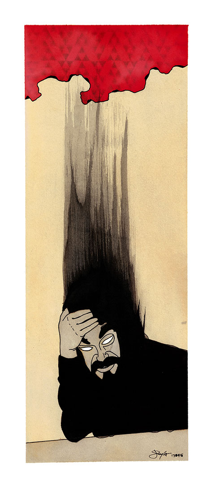

(almost) Everything that has been created in recent years. The rest turned to dust in the past lives during this life.
Ear
Tym Frost

Void Dealer - September 21, 2022

A Square Sun - February 23, 2022 (Released by SAH043)

There is no oxygen here - November 27, 2021

Toot - February 25, 2021 (Released by Casetta Records)
w/ Megasole

Elementa (Feat. Tym Frost) - December 28, 2022
Caustica

Desert Procession - May 6, 2022
Event Case (2019)Low Oxygen Level (2018)
Dark Tale (2017)
Snakes (2017)
Uranus Equinox Hike (2016)
Skeletal Omen (2016)
Transindustrial Hungher (2016)
Approaching Dusk (2015)
Notturno (2015)
Artificial Constellation (2015)
NeroBOT

Psychic Rehab - November 27, 2017

Electricks - September 23, 2014

Apparatus (early tracks 2005-2008) - December 17, 2013
Remix

Erik Strauss Empty Space Remix - October 7, 2019
One Step In The Pit

Daemonds - November 2, 2012
Maelstrom

November Lodge - 2002
Dancing Thy Silence
Unrest
No More Tears
Asteroids
Last Lustful Vow
The Whirled n-trance
Eye
Audiovisuals

Al Azif [urban view] - July 27, 2022

Aitheria [v.ext] - July 22, 2022

A Square Sun - April 20, 2022

Complex (glitches by Massimiliano Crosera) - March 23, 2022

Talking Box - November 27, 2017
Paintings

Fabio Todeschini - 2017

Erik Carnio - March 09, 2017

From the past (self-portrait) - April 16, 2017

The Thought (self-portrait) - April 16, 2017

The Threshold (Fumegai) - March 12, 2017

Silentium (self-portrait) - 1998?
Mouth
La Mente (2021?)
E' la folle Mente
che, decisa, mente
dicendomi che è la lente
che mi fa sembrar dormiente,
ma io non ho più sonno
e finalmkente sento splendente
la raffinata Mente.
Io non sono (21 maggio 2019)
"Tutto quello che vi ho detto è stata una menzogna. non sono chi credete io sia, non conoscete il mio nome, le mie inclinazioni sono completamente diverse."
"Non riusciamo a capire. Ci hai mentito per cinquant'anni su tutto?"
"Si, esattamente. E vi dirò di più: tutto ciò che ora vi sto dicendo potrebbe essere vero."
"Ma ti rendi conto della gravità di ciò che ci stai dicendo?"
"Si, assolutamente, ma io vi chiedo: non siete felici per ciò che avete compreso?"
"Come puoi anche solo pensare una cosa del genere? Certo che no! Sinceramente (e penso di parlare a nome di tutti) siamo abbastanza incazzati, increduli, sconvolti."
"Ma io invece vi dico: io vi ho appena liberati. Vi ho liberati dalle vostre idee nei miei confronti, vi ho liberati dall'amore che alcuni di voi nutrivano nei miei confronti, chi mi odiava può finalmente liberarsi da questo peso, chi non mi trovava interessante potrà finalmente conoscermi e potrò forse regalare loro nuovi ricordi in mia compagnia. Domani, potrete conoscere una nuova persona, se mi incontrerete, ma oggi io vi dico: io non sono qui, io non sono, ma sopratutto io non ero, e con me se ne va una parte della vostra vita che potrà essere nuovamente vissuta."
Il giorno dopo qualcuno lo uccise per strada, e le loro vite cambiarono ancora, per la seconda volta in due giorni.
L'ultimo (31 marzo 2017)
Si girò e non vide più nessuno dietro di lui.
Da quel giorno non vide più nessuna macchina dietro di lui nelle strade, nessuna persona dietro di lui a passeggio nelle città, nessun cliente seduto ai tavoli dietro di lui nei locali, nessuno dietro di lui nelle file alle tavole calde, negli uffici o a teatro.
Si rese conto di essere l'ultimo, e quel momento di sollievo lo accompagnò per tutto il resto della vita.
Fuorilegge (16 marzo 2015)
Prendetelo, fermatelo, arrestatelo! Mossa intelligente venire alla festa con i colori dell’altra fazione.
Quali colori? Quale fazione?
Non capiva cosa stesse accadendo
e per questo non si stava arrendendo.
I colori che porti, i vestiti che indossi
vedrai che del cranio ti romperem gli ossi,
amici, fratelli, non comprendo l’offesa
politica o sport su di me non fan presa
Non comprendo per niente di quel che parlate,
tra aule e spalti v'affannate e gridate,
perché della vita credete far parte
parlando di passione, d’amore e poi d’arte
Non state mai zitti e volete ordinare
e invece siete schiavi del vostro ciarlare.
Parli di silenzio, lurido verme?!?!
Ragazzi tenetelo! Le braccia ben ferme!
In ginocchio e in un angolo si sentiva il ragazzo,
ma dopo le botte capì chi era il pazzo,
lo schiavo del Caos disciolto nel Vuoto
inerte alla luce, in fondo al suo porto.
Ragazzi siete morti, perché credete in qualcosa.
Il suono del ferro e la canna si posa.
Nel negozio credete di vivere in pace
Invece io lotto e mi faccio tenace.
Se voi combattete per ciò che credete
io invece passeggio e soddisfo la sete.
non penso, non vivo, io sono un’essenza
controllate sul fondo la vostra scadenza.
Se credete nel tempo
vi sembrerà prematuro,
ma il momento è arrivato
per il graffito sul muro.
L’angelo di piombo
attraversò le cervella
ed il ragazzo si volse
all’ultima stella.